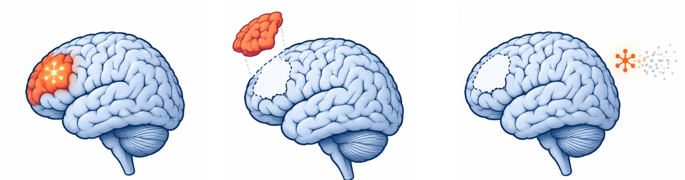
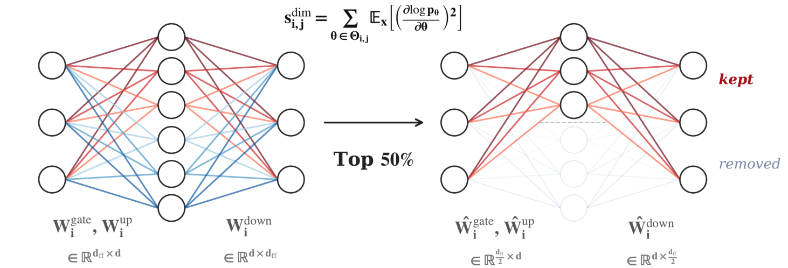
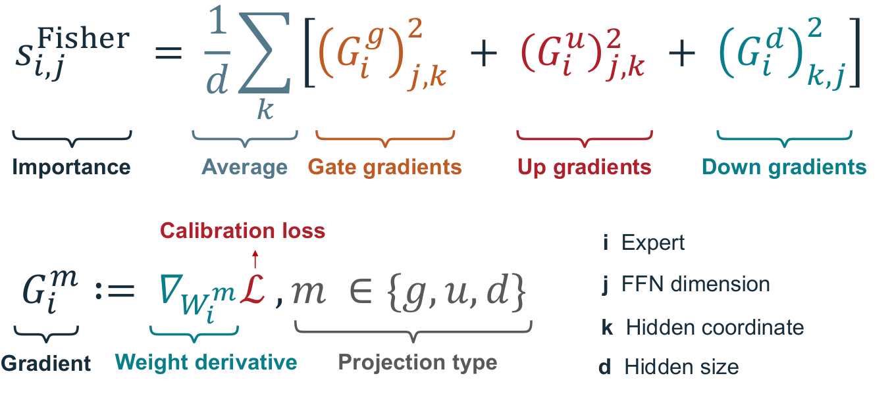
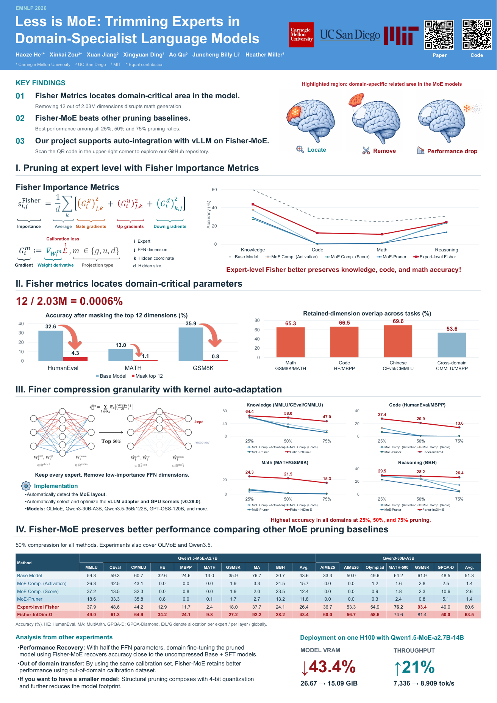

Automatic kernel adaptation
The poster reports automatic MoE layout detection and vLLM adapter and GPU kernel selection (v0.29.0).
Trimming Experts in
Domain-Specialist Language Models
1 Carnegie Mellon University2 UC San Diego3 MIT
* Equal contribution
Keep every expert.
Trim the dimensions.
Half of the routed-expert FFN parameters
26.67 → 15.09 GiB
7,336 → 8,909 tokens / second
Deployment measurements: Qwen1.5-MoE-A2.7B on one NVIDIA H100. Values reported in the revised poster.
Capabilities are distributed across experts, but can depend on a very small set of FFN intermediate dimensions.
Just 0.0006% of the routed-FFN dimensions.
Masking 12 high-importance dimensions drops GSM8K accuracy from 35.9% to 0.8%. A small change can remove a large part of a model’s capability.
Qwen1.5-MoE. Dimension count and measurements follow the revised EMNLP 2026 poster.

Accuracy (%) after masking the top 12 dimensions, as reported in the poster.
Retained-dimension overlap is higher within the same domain than in the cross-domain example.
Fisher-MoE changes the unit of compression: from whole experts to intermediate dimensions in their feed-forward networks.

Use calibration loss gradients from the gate, up, and down projections to score each FFN dimension.
Keep high-importance dimensions. Allocate the pruning budget per expert (E), per layer (L), or globally (G).
Detect the MoE layout and select the vLLM adapter and GPU kernels for the compressed model.

The figure gives the paper’s formulation. See the release protocol notes for implementation details.
Fisher-MoE leads the pruning baselines shown in the poster across knowledge, code, math, and reasoning at 25%, 50%, and 75% pruning.
Fisher-IntDim-E · Qwen1.5-MoE · Accuracy (%) · E denotes allocation per expert. These values are separate from the global (G) results below.
All compressed methods remove half of the routed-expert FFN parameters.
Accuracy (%). HE: HumanEval. MA: MultiArith. GPQA-D: GPQA-Diamond. Bold values mark the best compressed result in each column. The base model is uncompressed.
The project connects structural pruning with model loading, evaluation, and vLLM deployment.
Get started on GitHubThe poster reports automatic MoE layout detection and vLLM adapter and GPU kernel selection (v0.29.0).
Domain fine-tuning recovers accuracy close to the uncompressed Base + SFT models with half the FFN parameters.
Structural pruning can be combined with 4-bit quantization to further reduce the model footprint.
Read the full study, run Fisher-MoE, or take a closer look at the conference poster.

EMNLP 2026 · Revised poster@article{he2026lessismoe,
title = {Less is {MoE}: Trimming Experts in Domain-Specialist Language Models},
author = {He, Haoze and Zou, Xinkai and Jiang, Xuan and Ding, Xingyuan
and Qu, Ao and Li, Juncheng Billy and Miller, Heather},
journal = {arXiv preprint arXiv:2606.05538},
year = {2026},
url = {https://arxiv.org/abs/2606.05538}
}